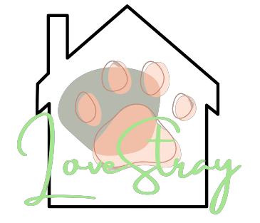

Bbama was found in a box with other puppies across the street of our sanctuary. They were all newborns, so our team decided to take in each one of them, and Bbama was the only one who was not adopted right away. The sanctuary all chipped in in taking care of him, until a young man came in and was immediately connected with him.
Bbama was able to go home with the man, and he still keeps in touch with us by sending us cute pictures of Bbama as he grows up.
Simon was taken in by a couple who mentioned that he had been

Boomer was brought in from the streets by a concerned young woman who lived along the neighborhood where he was seen. When he came in, he was ecstatic to be showered, and to be basically taken care of by our team. He would finish the bowl we would give him in seconds. That was how deprived of care Boomer was.
Boomer also loved a green toy plush in particular, similar to the
A kid came in with both of his parents, and they told us that they wanted to adopt a dog for their son as a 7th birthday gift. When we showed them around, Boomer greeted the kid, and was asking to play with him. Both of them played for a few minutes, and the young boy finally decided that he wanted to take Boomer home.
Finally, Boomer has his own Andy, and they were able to go home happily.

Sun, Moon, and Ray are siblings who came to our sanctuary through our leader's friend who saw them in a box as puppies. They were our longest babies, and were considered the
The other dogs in our sanctuary would gather around and play around Sun, Moon, and Ray, especially when the three of them were all together.
Our sanctuary was a little sad when no one wanted to take our three musketeers home. We were worried, as their age kept adding up, and they did not have any time left.
Our prayers were finally heard when they were able to go home with an old man who was willing to take care of them.